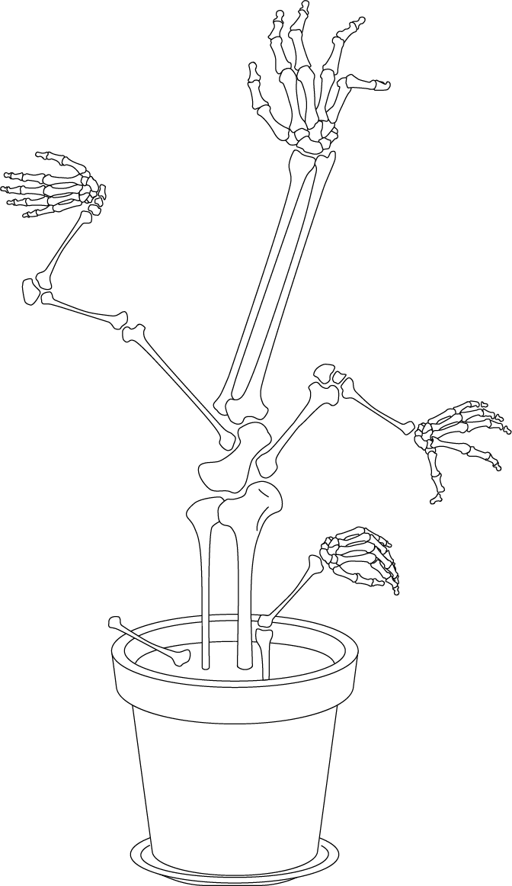

Forests still cover about 30 percent of the world’s land area, but they are disappearing at an alarming rate. Between 1990 and 2016, the world lost 502,000 square miles (1.3 million square kilometers) of forest, according to the World Bank—an area larger than South Africa. Since humans started cutting down forests, 46 percent of trees have been felled, according to a 2015 study in the journal Nature. About 17 percent of the Amazonian rainforest has been destroyed over the past 50 years, and losses recently have been on the rise.
The removal of trees without sufficient reforestation has resulted in habitat damage, biodiversity loss, and aridity. Deforestation causes extinction, changes to climatic conditions, desertification, and displacement of populations, as observed by current conditions and in the past through the fossil record.
Deforestation also has adverse impacts on biosequestration of atmospheric carbon dioxide, increasing negative feedback cycles contributing to global warming.
